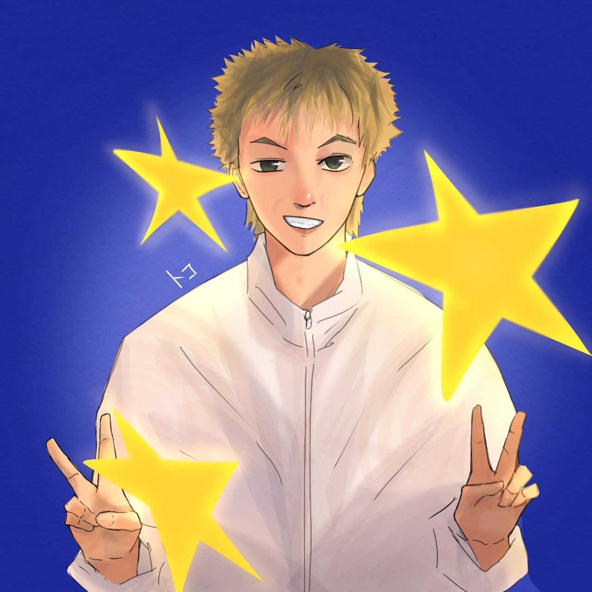

Digital Artist
Toko
Bringing people to life in anime style.
I turn your ideas, portraits, and favorite moments into expressive anime-inspired art.
Open for custom commissions

Portfolio
Featured Works
A selection of portraits, fan art, and original characters — click any piece to view it full size.
About
Hi, I'm Toko
I've always loved the way anime can take a real feeling — a glance, a quiet moment, a favorite memory — and make it glow. That's exactly what I do: I draw people, characters, and stories in an anime style that feels personal and alive.
I specialize in anime-style portraits, character illustrations, and custom commissions. Whether you want yourself reimagined as an anime character, an original character designed from scratch, or a favorite scene turned into artwork, I'm happiest making it feel truly yours.
Every piece starts with a conversation — your ideas, your references, the mood you're dreaming of — and I take it from sketch to final color.
- Anime Portraits Turn your photos into expressive anime characters.
- Character Illustration Original characters brought to life with personality.
- Custom Commissions Unique pieces built around your ideas and stories.
Commissions
Let's Create Something Amazing
Have an idea? Let's turn you or your character into anime art.
Contact on TelegramMessage me at @toko18
- A photo or reference
- The vibe or style you love
- Colors, mood, and ideas
Custom commissions are always welcome — whether it's a single character, a couple, or a whole scene. Just tell me your idea and we'll shape it together.